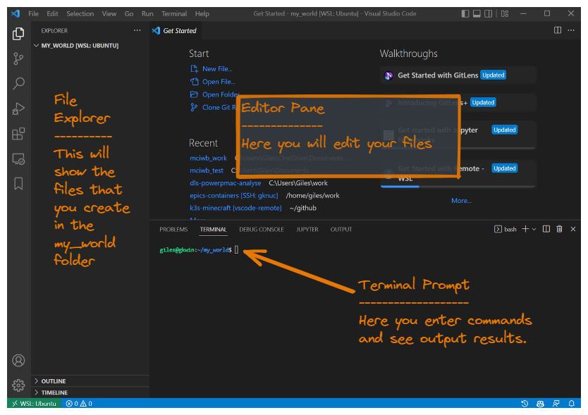

Installation#
Introduction#
For the first tutorial we are going to prepare your computer for the rest of the tutorials. To do so we need to install the following software:
The Minecraft Java Client (with Minecraft account purchase)
Docker Desktop
Visual Studio Code
Python
Minecraft Interactive World Builder Python package
Warning
The tutorials for this project are intended to be accessible for complete beginners. However, this first step of getting all of the software installed may need a little bit of knowledge of the basics of your operating system.
For this Setup Tutorial, I recommend that novices get a little help from someone with computer experience. This setup tutorial need only be done once (per computer) and the remaining tutorials should not require prior knowledge.
The Minecraft Java Client#
If you already have the Minecraft Java Client installed proceed to Docker Desktop.
You will need to purchase a license for Minecraft from Microsoft.
Go to this site to buy your copy, if you do not already have one:
Once you have a license, download the Java client to the computer where you will be trying out MCIWB. This is the download link for the Java client:
Microsoft has now bundled the Java and Bedrock editions together. We are using the Java edition here but this project could be adapted to work for either in future.
When you start Minecraft you will be asked to login with your Microsoft details, note that the ‘Mojang Login’ option is only for legacy users who have not yet migrated.
When you have successfully launched the Minecraft Launcher, you will see a a screen like the following. Leave this screen open and move on to the rest of the tutorial. We will come back here and connect to a Minecraft server in a later tutorial.

Docker Desktop#
Docker is a tool that allows you to run your Minecraft Server in a container. This makes it easy to run and avoids having to manually install and maintain the server code. You do not need to understand too much about this since MCIWB will automatically use docker on your behalf.
The easiest way to install Docker is to use Docker Desktop which is free to use for individuals.
- Windows:
Docker Desktop requires WSL2 and a linux distribution to go with it. So you should first install WSL2 and Ubuntu 22.04 LTS from here - https://apps.microsoft.com/store/detail/ubuntu-2204-lts/9PN20MSR04DW
- All Platforms:
Instructions for Docker Desktop installation for all platforms are here: - https://docs.docker.com/get-docker/
For mciwb to work you will need Docker Desktop to be running before you start Visual Studio Code. So start it from the start menu before moving to the next step.
To make things easier next time you could go into settings (accessed
via the cog icon in the title bar of the Docker Desktop main window)
and tick the option
Start Docker Desktop when you log in.
Visual Studio Code#
This is the tool we will use to edit our Python code. If you are already a developer then you can use your preferred IDE instead. The tutorials will use Visual Studio Code, so if you are new to programming this is a recommended install.
VSCode is free, open-source software.
This link provides downloads for all flavours of VSCode:
Command Line#
From now on we are going to start using the command line. You are free to use whatever terminal program you like, however I recommend that you use the integrated terminal inside of Visual Studio Code.
Here we will set up our initial VSCode work folder and get a bash
command line prompt. bash is the most popular shell for Linux,
it provides a command line interface to all the utilities and services
on a Linux computer. On Windows we will be using the Linux Subsystem so will
also use bash. On Mac we will be using zsh but this is pretty similar
to bash.
First open VSCode from the start menu.
Note
Windows Users: Important
We are going to use ‘Windows Subsystem for Linux 2’ or WSL2. Go here first to get VSCode connected to WSL2: Windows Subsystem for Linux
Let’s create a work folder for use in further tutorials and tell VSCode To
open the folder. We’ll call it my_world but you are free to use your
own name.
First start a terminal by selecting from the menu bar
Terminal -> New Terminal.
The bottom half of your VSCode window will display a bash
prompt like this:

Type the following to make sure you are in in your home directory and then
create a new folder called my_world:
cd
mkdir my_world
Now we want to reopen VSCode with the new folder set as its work area.
From the menu bar choose File -> Open Folder. You will see a list of
folders, select my_world and click OK.
You will be asked if you trust the authors of files in this folder.
You do trust them because they are you! So click
Yes I trust the authors.

Now you should see a you VSCode window that looks something like this:
{kind=link}
From this point on all commands typed in the console and chosen from VSCode menus should be the same for Windows, Linux and MacOS. This is because you now have a bash shell for typing commands.
Warning
There is one caveat here. When directed to install a software package with
sudo apt, this will only apply if you are using a Debian derived
OS such as Ubuntu (this also covers Windows WSL2 users).
Mac, CentOs, Arch based users - I’m hoping you will know the equivalent
commands. I will supply an appendix for other OSes in future.
Python#
The Python Programming Language is also free and open-source.
This is essential for working with MCIWB. Python 3.10 because the underlying RCON library requires it. This is the latest version of Python at the time of writing.
These commands will install the necessary packages to make Python 3.10 available on your system:
sudo apt update
sudo apt install -y python3.10
sudo apt install -y python3.10-venv
sudo apt install -y python3-pip
If you have an older version of Ubuntu it may not have Python 3.10 available.
In this case you need to use the deadsnakes PPA to get the latest version as
follows:
sudo apt install -y software-properties-common
sudo add-apt-repository ppa:deadsnakes/ppa
sudo apt install -y python3.10
sudo apt install -y python3.10-venv
sudo apt install -y python3-pip
Virtual Environment#
We are going to create a Virtual Environment for our Python packages to install in. This is a way to keep the packages you install (like mciwb) separate from the packages you install for other projects.
First create the Virtual Environment by typing (note the leading “.” in the folder name “.venv”):
python3.10 -m venv .venv
Then activate it by typing the following. This command will need to be repeated each time you restart your terminal or open a new terminal:
source .venv/bin/activate
Note you can tell you have an active Virtual Environment because your terminal prompt will change to have a leading (.venv) like this:
(.venv) giles@gkwin:~/my_world$
Minecraft Interactive World Builder library#
The final component is MCIWB itself. This needs to be added to the Python environment we already made above. Again, this is free open open-source software.
Before the next step, let’s make sure that we are in the right folder and that we have the Virtual Environment activated:
cd $HOME/my_world
source .venv/bin/activate
The cd command stands for Change Directory. This is a command that sets
the current working folder (or directory). This is the default folder
that your commands will work with from now. $HOME is your default HOME
folder, the folder in which your user keeps their personal files. We already
created the folder $HOME/my_world earlier and this is where we will store
all of the work we do with MCIWB.
Everything is all set up ready so the following simple command will get mciwb from the Python Package Index (PyPi) and install it into the Virtual Environment:
pip install mciwb
Assuming all is well you should be able to verify everything is working by typing the following:
mciwb --help
That’s all the hard bits done and they only need to be done once. You can now proceed to the next tutorial.